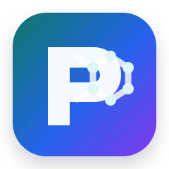

Molecular & Reaction Drawing
Create and document molecules and reactions with structure-aware workflows designed for chemists and scientific users.

PeruseLabAI-Enabled Chemical Informatics
PeruseLab helps chemists, researchers, educators, and students create, document, search, analyze, visualize, and share molecular knowledge in one integrated platform.
Why PeruseLab
Chemists generate structures, reactions, annotations, observations, and research context across disconnected tools, files, notebooks, presentations, and databases. The result is knowledge that can be hard to find, hard to reuse, and difficult to share across teams.
PeruseLab is designed as a practical chemical informatics workspace: a place where molecular structures and scientific context can be created, searched, documented, visualized, and reused with less friction.
Capabilities
Create and document molecules and reactions with structure-aware workflows designed for chemists and scientific users.
Search by exact match, substructure, superstructure, and similarity to discover and reuse molecular knowledge more efficiently.
Use AI to help capture scientific context, generate documentation, and support multilingual knowledge sharing.
Explore molecules and proteins in 3D to support teaching, research, communication, and scientific interpretation.
Turn molecular information into searchable, comparable, reusable knowledge assets for research and education.
Support shared scientific workflows with reusable templates, comments, likes, and knowledge-sharing patterns.
AI & Multilingual Science
PeruseLab is evolving toward an AI-enabled scientific platform where chemists can use modern AI capabilities without needing to become AI engineers. The goal is simple: make documentation, translation, knowledge capture, and research communication easier.
Current and planned work includes LLM-assisted scientific content, multilingual documentation, AI-supported knowledge management, and future graph neural network models for QSAR and QSPR prediction.
Use Cases
Organize structures, documentation, search results, and scientific context in a reusable workspace.
Teach chemistry concepts with interactive structure creation, visualization, and AI-supported explanations.
Support discovery workflows, search, documentation, and cross-functional knowledge reuse.
Showcase expertise, create reusable scientific assets, and collaborate with customers and partners.
External Engagement
Presented PeruseLab’s mission, capabilities, accomplishments, and vision for AI-enabled chemical informatics.
Demonstrated PeruseLab’s comprehensive capabilities, workflow breadth, and user-centered approach to chemical informatics.
Preparing live booth demonstrations for chemists, researchers, educators, students, collaborators, and potential partners.
Abstract planned on PeruseLab’s multilingual capabilities and integrated feature set for accessible, collaborative research.
Connect
Reach out to discuss demos, conference meetings, academic collaboration, scientific workflows, or AI-enabled chemical informatics opportunities.
Tip: this page is designed to work well as a QR-code destination for ACS, ABCChem, booth materials, email signatures, and LinkedIn posts.